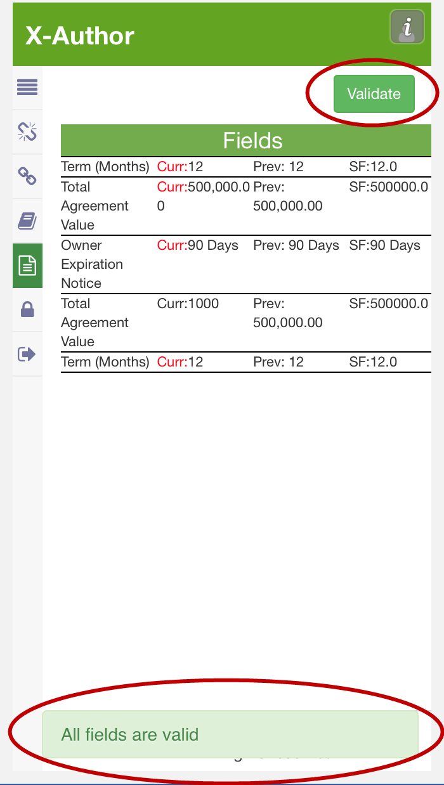

Working with Fields
The Fields section of the Document Panel lists all smart fields in the agreement document.
Use the Document Panel to take the following actions on fields in the document:
To view and change fields
-
Hover over the
Document button and select Fields
to open the Document Panel.

All fields are displayed in a list in the order they appear in the document. Current (document), previous (as of last check-in), and current Salesforce values are displayed.

-
To change the current value of a field, place your cursor in the field content control in the document and make changes.

-
Click Validate to confirm that the new field value is valid
for its corresponding data type.
The screen refreshes and displays the message "All fields are valid" if all fields in the document are currently valid. The "Current" value of the field you changed is updated in the list to reflect the change you made.

Changed field values are updated on in the agreement document upon check-in. If you choose to reconcile fields during check-in, they will also be changed on the agreement record.
To reject changes to a field
If changes have been made to smart fields in the document, you can choose to reject these changes in the same session prior to check-in.
To reject changes:
-
Hover over the
Document button and select Fields to
open the Document Panel.
To validate fields
Use the Validate action to ensure that all smart fields in your document are in the proper format for their assigned data type (e.g., Date, Number, DateTime, selected values from picklists,etc.). The agreement document cannot be reconciled at check-in unless all fields in your document are valid.
To validate fields:
-
Go to .
-
Click on the Validate button.
If any fields are invalid, the field row in the Document pane will be highlighted in red.

If all fields are valid, a success message is displayed at the bottom of the pane. You can now check in your document.

To mark fields for deletion
There will be times in the negotiation when a negotiating party wants to remove language from an agreement which contains a smart field. Depending on document protection settings, non-Apttus users can remove content from the agreement, but any smart field content removed will not remove the field itself. Follow the instructions on this page to mark fields for removal. You usually want to mark fields for removal when:
- An Apttus user marked static text as a field.
- A Template Admin marked a field as smart.
- You need to delete a smart clause from an agreement document.
The field is removed from the document.
To unmark fields for deletion
If you decide in the same session that you want to keep a field in the document that you have already marked for deletion, follow these steps.
- Go to .
- Right-click on the field in the Document pane that you marked for deletion and select Undo Delete.
- Click Yes on the confirmation dialog that appears.